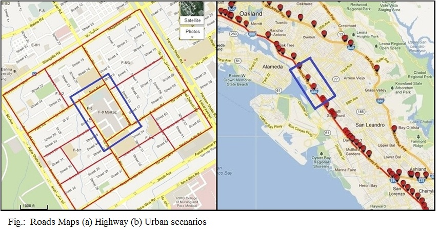
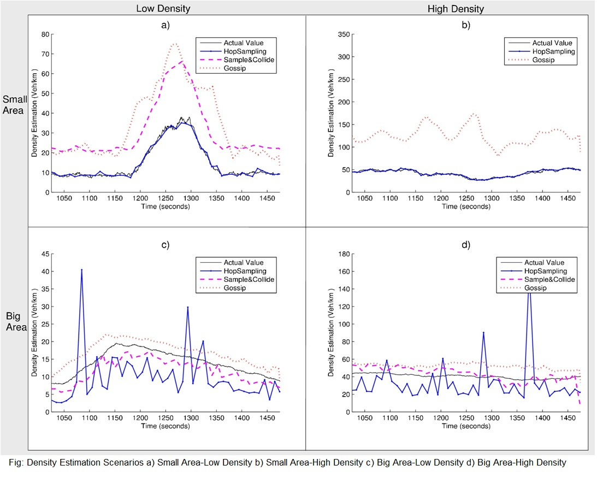

Advisors: Dr. Oznur Ozkasap; Dr. Sinem Coleri Ergen
Vehicle density is an important system metric used in monitoring road traffic conditions. Most of the existing methods for vehicular density estimation require either building an infrastructure or using a centralized approach based on counting the number of vehicles in a particular geographical location via clustering or grouping mechanisms. These techniques however suffer from low reliability and limited coverage as well as high deployment and maintenance cost. In this paper, we propose fully distributed and infrastructure-free mechanisms for the density estimation in vehicular ad hoc networks. Our study is inspired by the mechanisms proposed for system size estimation in peer-to-peer networks. We adapted and implemented three fully distributed algorithms, namely Sample & Collide, Hop Sampling and Gossip-based Aggregation. The extensive simulations of these algorithms at different vehicle traffic densities and area sizes for both highways and urban areas reveal that distributed algorithms can be effectively used for density estimation in VANETs.
Vehicular density is one of the main metrics used for
Monitoring road traffic conditions
Congestion on the road
Current methods rely on building an infrastructure for estimating the vehicular density.
e.g. Roadside radar, Infra-red counters, Cameras
However, current techniques suffer from
High deployment cost
High rate of failures
Limited coverage
We adapted three fully distributed algorithms developed for system size estimation in peer-to-peer (P2P) networks to infrastructure-free vehicle density estimation in highly mobile vehicular ad hoc networks.
The algorithms have been rigorously tested for validity and performance based on real life data across
Highway Roads
Urban Roads
For different traffic densities and area sizes.
Sample & Collide:
Initiator node uniformly sample nodes from population
It then estimate the system size depending on how many samples of the nodes are collected, before an already sampled node is re-selected
Hop Sampling:
Initiator node broadcasts initiator message to all the nodes in the network
Nodes reply back probabilistically depending on their distance from initiator
Initiator estimate network size based on replies
Gossip-based Aggregation:
Initiator node samples K initiators vehicles at random
Each peer periodically exchanges information with its neighbors to estimate the size of the network
|  |
|  |
We propose and analyze fully distributed and infrastructure-free mechanisms for vehicle density estimation in VANETs
The analysis demonstrates that Hop Sampling provides the highest accuracy in the least convergence time by introducing the least overhead to the network but at the cost of higher load on the initiator node.
The high performance of Hop Sampling algorithm supports the usage of distributed approach in the density estimation in VANETs, instead of using infrastructure based solutions that suffers from limited coverage, high deployment and maintenance cost
Our ongoing work involves incorporating the effect of background traffic on the efficiency of the algorithms.
We aim to propose a new distributed protocol especially tailored for VANETs, taking advantages from the strong aspects of the three algorithms used in this work.